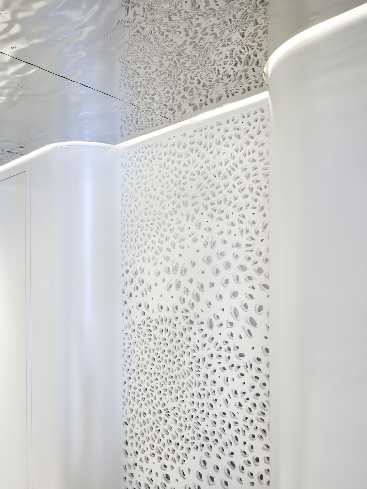
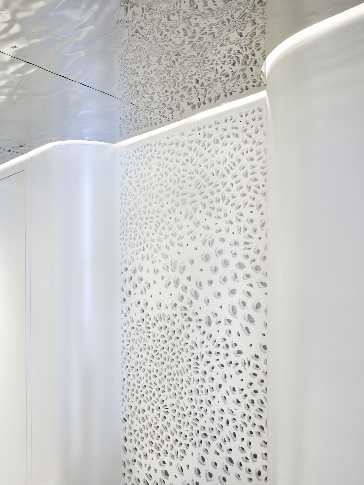

Luxus meets Maritime Design - Fluide Formen zitieren das umgebende Wasser und bringen einzigartiges Design.
Das Büro studio a.s.h. hat den Entwurf sowie Ausbau und Fertigstellung der Yacht begleitet. Organische Formen als Bewegung des Wassers, Silber-, Perlmutt- und Blautöne als schlichte Eleganz der Muscheln und Fische, sowie weiterer maritimer Lebewesen bringen den Ozean nach Innen.
Mit verschiedenen Fräs- und Folienmuster und exklusiver Materialwahl erhält das Design einen unverwechselbaren Feinschliff. Im Hallway und der Owners Cabin beispielsweise kommt ein Fräsmuster zum Einsatz, welches entfernt an Korrallen erinnert. Dass gefräste Pattern findet wiederholt z.B. am Bettrücken oder an der Schrankfront statt.
Es wird mit einem wie auch mit zwei Layern gearbeitet - die Wandverkleidung wird zur Kunst. Die glatte gefräste Platte in Iriodin Icy white Shimmer lackiert setzt sich hervoragend gegen die silberne Midas Oberfläche ab bzw. bietet im Hallway hinterleuchtet ein spannendes Ambientlight und Blickfang im Treppenaufgang.
Auch beim Bartresen auf dem Deck kommt dieses Prinzip zur Anwendung. Tagsüber wirkt er wie ein in sich geschlossener Körper mit reduziertem Muster, Abends wird er zum Blickfang, welcher durch seine tranzluzenten M
uster sanftes Licht indirekt streut.
Die Fräsungen werden durch verschiedene Folienmotive ergänzt. Eine bedruckte, metallische Folie, in der Anmutung von Fischschuppen oder ein Cut Out, der die Schatten des sandigen Meeresboden immitiert - spielerisch durchzieht das maritime Thema die Oberflächen der Yacht.
Büro: studio a.s.h.
Tools für die Erstellung der Fräsdateien: Rhino & Grasshopper
Tools für die Erstellung der Folien: Photoshop & Illustrator